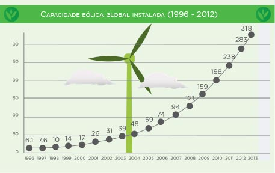

Atualmente, cerca de 86 países possuem usinas eólicas comerciais, sendo que 22 deles são capazes de gerar pelo menos 1 GW. Até 2005, a Alemanha liderava o ranking dos países em produção de energia através de fonte eólica. Em 2008 foi ultrapassada pelos EUA, mas desde 2010 a China já é o maior produtor de energia eólica do planeta. Os EUA em 2012 instalaram mais de 8 GW, chegando a alcançar cerca de 13 GW. A Dinamarca detém a maior participação de fonte eólica em matriz energética nacional: 30%.
Fonte: GWEC - Global Wind Energy Council.Global Wind Statitics / FEB 2014.

Fonte: GWEC- Global Wind Energy Council